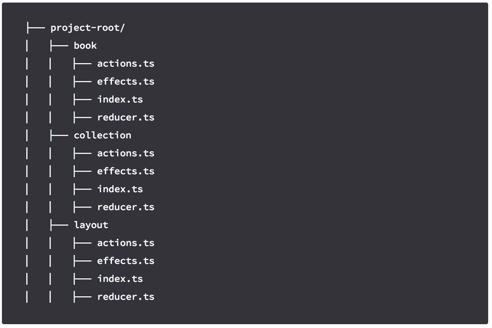
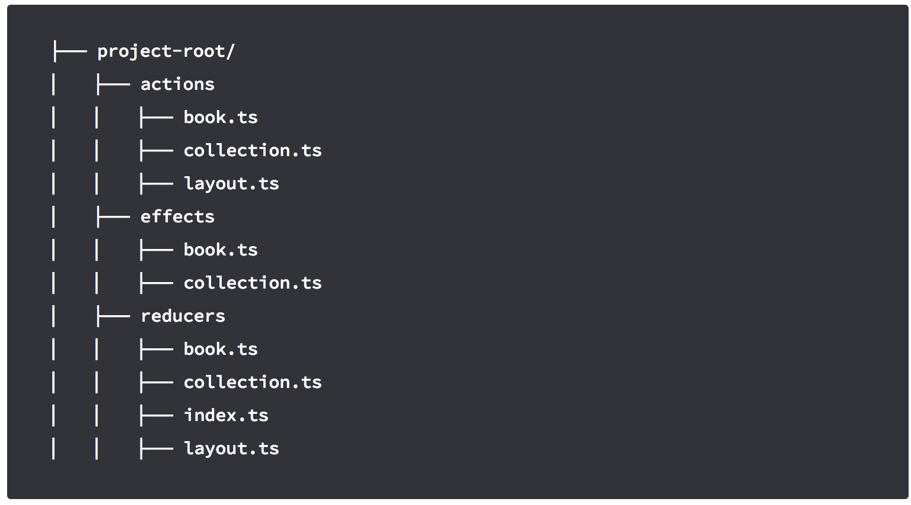
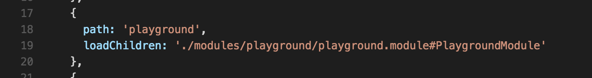
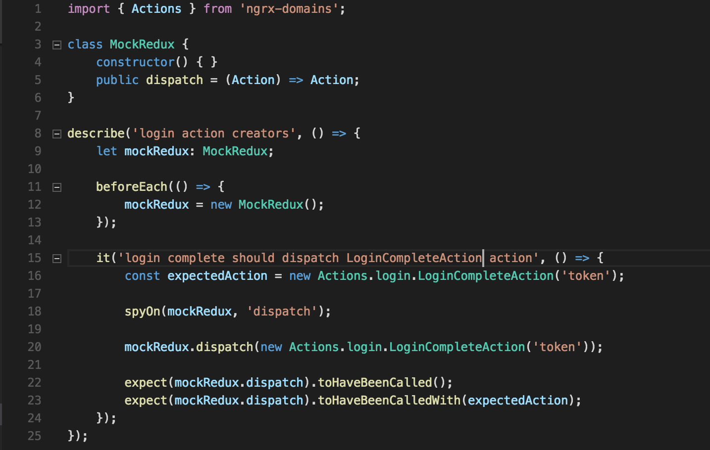
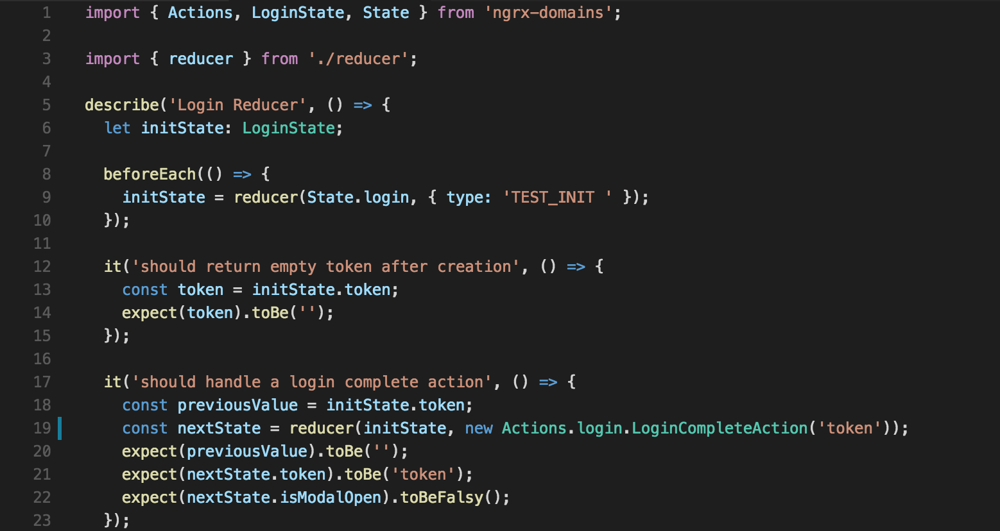

NgRx Domains
Angular2 + Redux + LazyLoad.
Presentado por Guillermo Hernán De Souza
¿Que es Redux?
Es una herramienta que utiliza el patrón flux y tiene algunas diferencias
- Redux uses only one store
- State is Read-Only
"The only way to mutate the state is to emit an action, an object describing what happened." - Changes are made with Pure Functions
¿Que es Flux?
Es una arquitectura para aplicaciones donde el flujo de datos se maneja en una sola dirección.


¿Porque elegimos redux?


Estructura de archivos
Podemos elegir 2 tipos de estructuras
- Por Funcionalidad
- Por Role de Redux
Por Funcionalidad
Por Redux
Lazy Load
Angular 2 hace simple el uso de lazy load, mediante la definición en el modulo de rutas podemos darle un entrypoint y va a cargar el modulo on demand.
ngrx-domains
Es un plugin orientado a resolver esto de una manera simple.
Internamente tiene un observable que emite un evento cuando un nuevo dominio es registrado y re crea el árbol de reducers de nuevo.
Dominios
Un dominio es un namespace que encapsula el feature y permite acceso desde cualquier parte sin referencias especificas.
Detalle de un Dominio
Cada Dominio de redux es una unidad responsable de:
- Publicarse a si mismo
- Publicar su información
- Publicar sus acciones
- Administrar la logica de si mismo (reducers)
- Publicar consultas a puntos del state (opcional)
- Publicar modelos (opcional)
Redux Devtool
Está disponible para Google Chrome y entre sus Funcionalidades se destacan
- Exportar e Importar secuencias de eventos
- Reproducir la secuencia
- Cambiar el orden de los eventos
- Ver estado del Store con cada evento emitido
Testing
En angular 2 es común hacer test de componentes y servicios, ahora tambien debemos agregar test para reducers, acciones y effects
Testing de una acción
Testing de un Reducer
Testing de un Effect
Para hacer test de un effect debemos seguir estos pasos, agregando los mocks necesarios para poder instanciar nuestro servicio.
Tutorial- Hernán De Souza
- Sr Frontend Developer
- Grupo de Facebook: FrontoDevs
- Skype: desouza03
- Github: github.com/H3rN4n